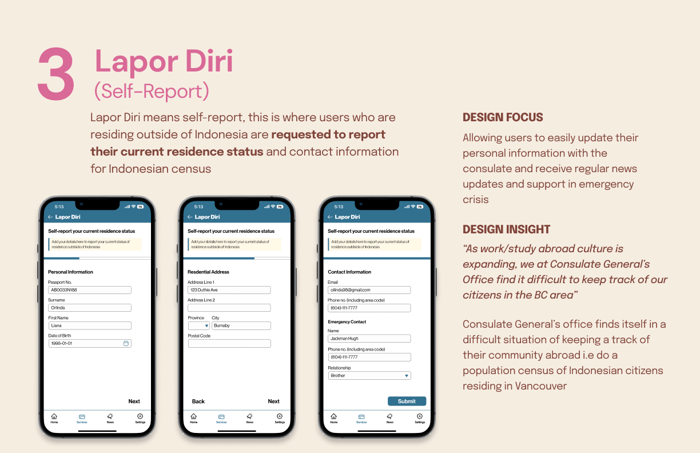
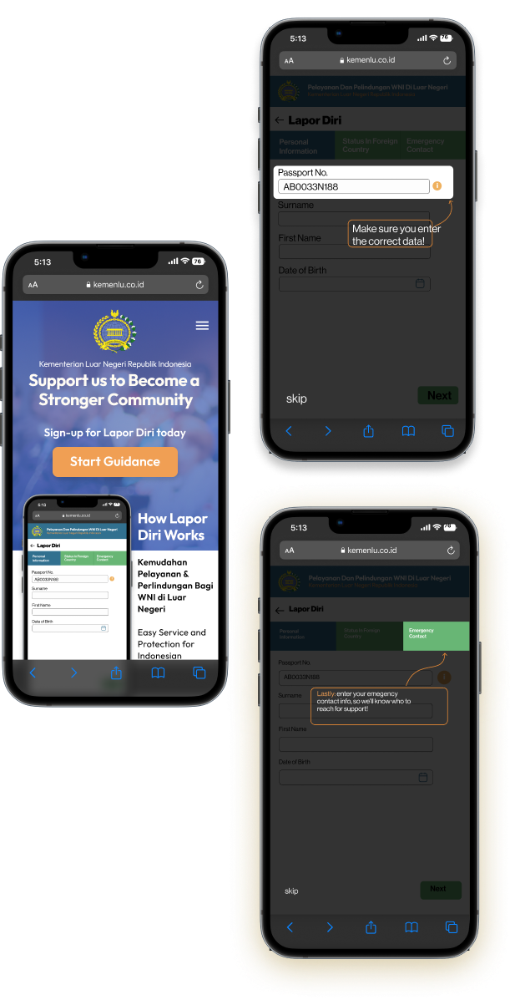

Self Report Onboarding guide
The concept of this design is an interactive onboarding guide that helps users learn how to self-report correctly. Through the use of a self-report tutorial, the onboarding guide breaks down the self-report application step by step with highlighted sections to indicate where users should enter information and most importantly, what type of information should be entered.The guide conveniently links to the consulate’s portal for self-report applications for users to complete one if they so choose after completing the guided tutorial.
Client
The Consulate General of Indonesia, Vancouver
Role
UX/UI Designer
Main Contact person
Researcher
Tools
Figma
Participant Group Poster
One of the first steps for us to do in this project was to create a poster that Introduces who the client group is. this is done after our initial visit and interview with the Consulate

Initial Concerns
One of the first steps for us to do in this project was to create a poster that Introduces who the client group is. this is done after our initial visit and interview with the Consulate
Personas
From then we were asked to create three personas


Initial Concept
Journey Framework


Reframed Design focus
Looking back, we were presented with several design opportunities but after conducting more user research and reflecting on our interview results, we reframe our initial concept to be:
Design a mobile application for existing Indonesian students in Vancouver to track the status of their passport renewal applications and provide their information to the consulate for emergency purposes
Final Concept
Reflection
From then we were asked to create three personas